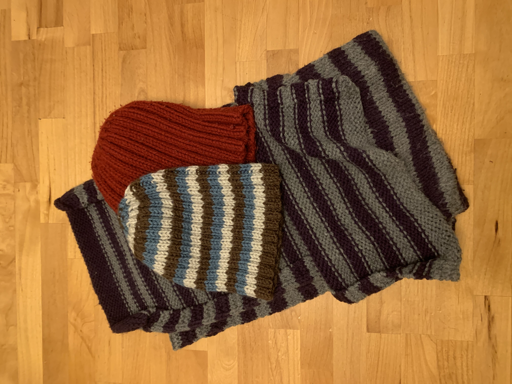
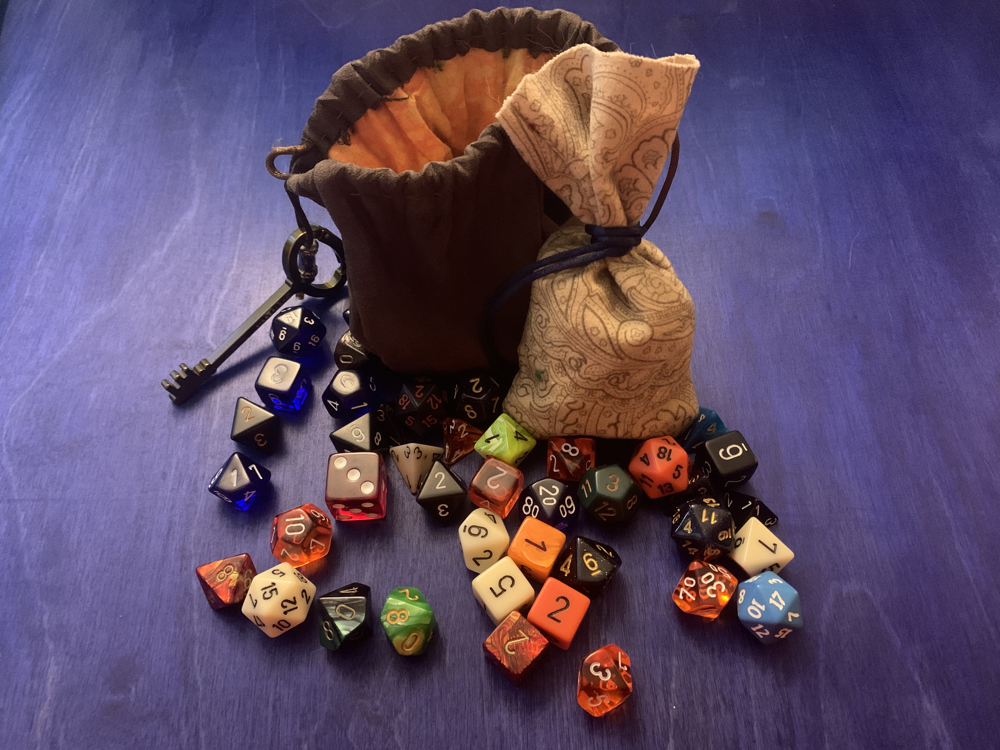

I first learned to knit and cross stitch from my grandmother when I was 11 years old. I spent a lot of time at her house as a kid and she has been an avid knitter and cross stitcher her entire life. Of all my hobbies, knitting and cross-stitching have been the most consistent, probably because they are relatively affordable hobbies and can easily be done while watching TV.
Knitting
I built on the early lessons from my grandma and have made and given away many knitted hats and scarves to friends and family. I have made a couple of sweaters and a couple of knitted blankets in the past, but I haven’t really been able to work on those bigger types of projects since I adopted my cat Arthur who sits in my lap ever evening.
Cross-stitching
Cross-stitching, sometimes called counted cross stitch, is a form of embroidery, the decorative weaving of colored thread (“floss”) into fabric. Traditional embroidery is vector driven, where thread is sewn into fabric in linear shapes. Cross stitching on the other hand is a rasterized process where individual stitches are made consistently and at regular intervals.
Unlike my knitting projects, I haven’t given away many cross-stitched pieces. Some of them need to be framed and some are personal, things I made for myself. I do make one type of cross-stitching that I have given away to a few special friends, the tiny rugs. These tend to be for special gifts, however. Unlike a hat or scarf that takes maybe a week or two to make, even a small piece like a tiny rug takes a few months to produce.
Some of the pictures I’ve made come from kits with a predetermined pattern and colors, usually with the floss included.
Many of the pictures I’ve made are of images I have found online and then made my own pattern. A few of the things I’ve cross-stitched are original compositions.
Crocheting
I have only recently begun trying crocheting again. I learned once, a long time ago, but I didn’t care for the finished product. Lately though, I have been making these very simple dice bags and can do them in a night or two of evening TV.
I made a larger version of the dice bag to serve as a water bottle sling. While I maintain that knitted work is finer, more comfortable to wear, it is much tricker to make complex or three-dimensional fabric. With crocheting though, you can work in three dimensions easily and with a wider range of materials. I’ve even seen people crochet shopping baskets with cut up plastic grocery bags. It is a versatile craft indeed.
Sewing
I learned to sew a button on and make small repairs from a class in school once, but sewing things, whole things, is still new. I don’t know that I will rise to the level of making my own clothes, but I would like to be able to put together a solid Halloween costume or help make alterations for a school play. Right now, I have managed to make a couple of small pouches (read: “dice bags”). And once I am finished with grad school, I hope to be able to devote more time to learning how to cut parts for more complex pieces. I am interested in sewing because “it’s what’s next” and like many of my other crafting hobbies, I wanted to see if I could, but also to make practical things that fit me, like a new apron or yes, a Halloween costume.
